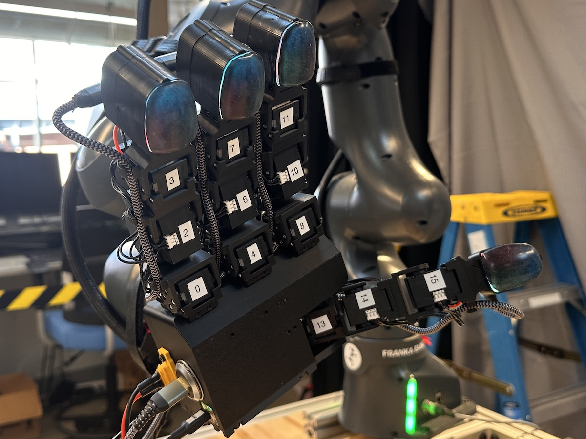
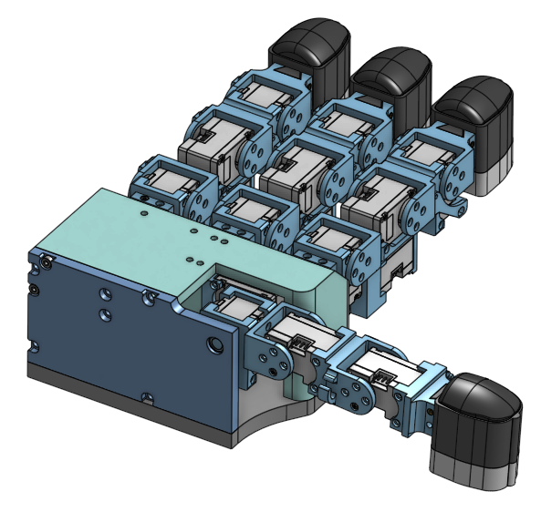
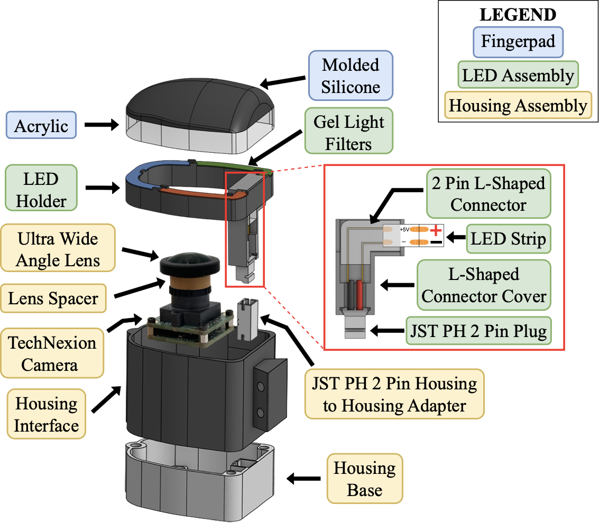
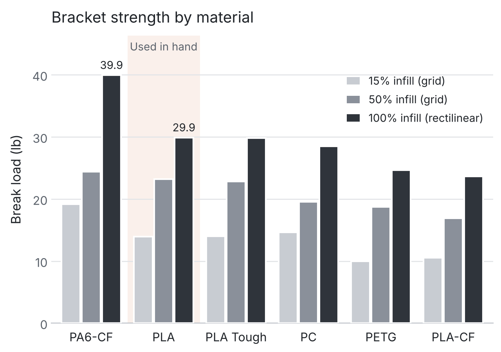

Robotic hand and Opti tactile sensor

Overview
The UCLA Biomechatronics Lab is focused on integrating the sense of touch in robots, collecting haptic information from tactile sensors mounted on the robot. I worked on the end effector of the lab’s 7-DOF robotic arm, a four-digit hand driven by 16 Dynamixel servos, and on the vision-based tactile sensor at the end of each finger.
My role


I designed the housing, wiring, and illumination system for Opti, a vision-based tactile sensor for training robot manipulation policies. Optical flow from its speckled silicone fingerpad yields divergence (local contact pressure) and curl (planar torque). A policy trained on the raw image together with these signals sorted blocks by weight with 86% accuracy, versus 38% from raw images alone, and resolved weight differences down to 13.8 g. I made its exploded-view diagram (above), wrote the fabrication guide for the open-source release, and am a co-author on a paper in preparation.
I also improved the hand’s strength and wiring. Thicker screw-hole margins, corner gussets, and fillets on weak edges increased the strength of a bracket that had failed in earlier versions by 75%. Cable hooks and organizers hid loose wires without limiting range of motion, and a custom electrical expansion board removed the need for soldering and twist-on connectors. I managed CAD releases in PDM and wrote the technical document and bill of materials.

Testing and results
To evaluate the redesign, I destructively tested the bracket by loading it the same way it had failed in repeated teleoperation experiments. The new design broke at 37.6 lb, compared with 21.5 lb for the previous design, both printed in PLA at 100% infill. I then compared six materials and three infill patterns. PA6-CF (carbon fiber nylon) was the strongest, but PLA was second strongest at 50% and 100% infill and the best value for its cost and ease of printing, so we used it for the hand. In PLA, 3D honeycomb was strongest at 15% infill and grid at 50%, but infill density mattered more than pattern: 100% infill was 29% stronger than 50%, while the best and worst patterns at the same density differed by under 20%. The results became the lab’s standard for 3D printing.